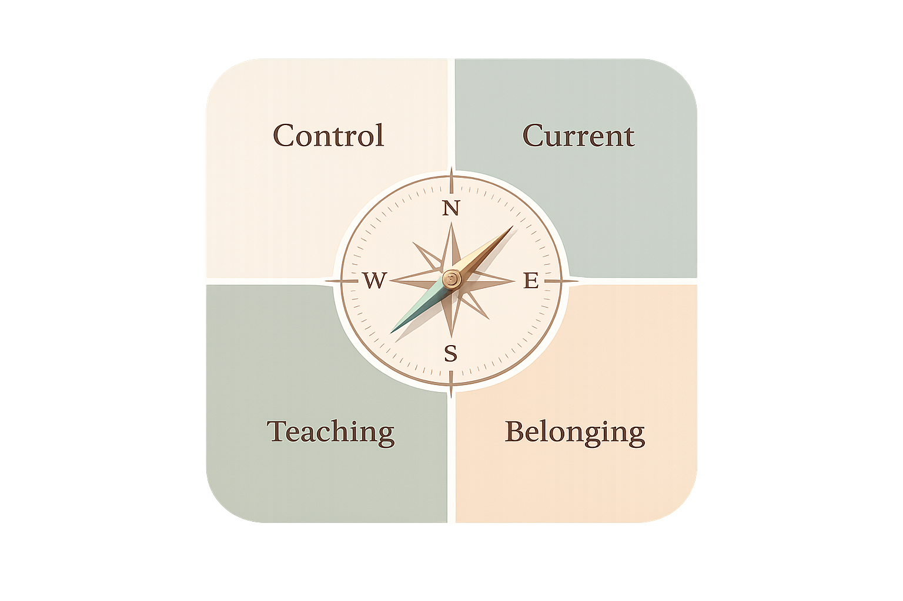
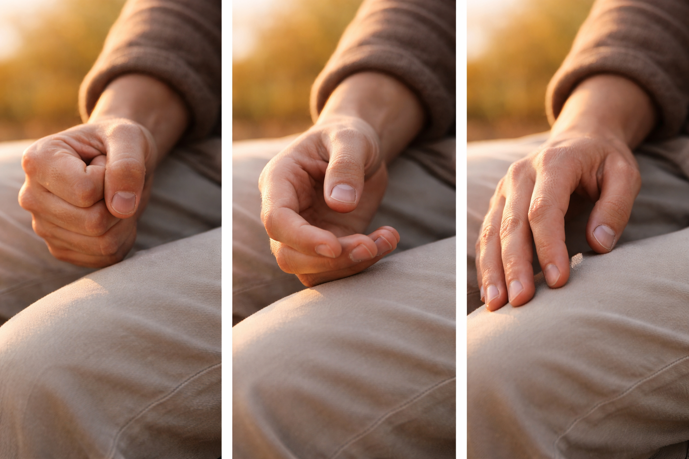
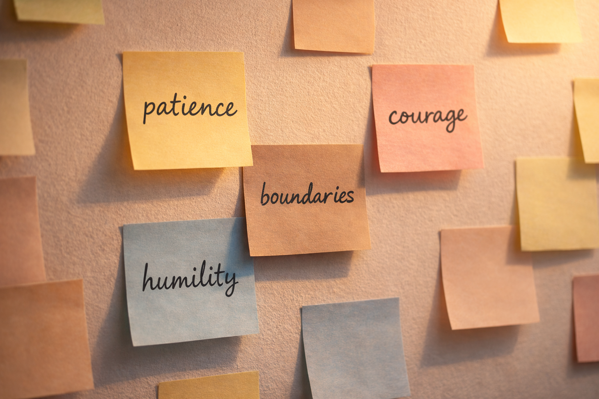
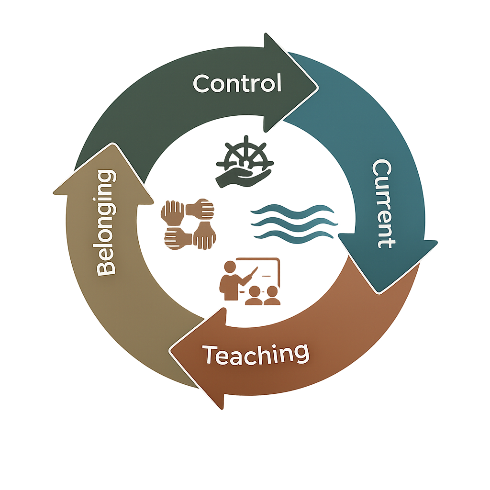

Control
Where am I forcing the uncontrollable?
This question reveals tight gripping and helps you release unwinnable battles.
Watts Daily Compass
Many days feel like constant pushing, forcing, and resisting. Alan Watts suggested another way: cooperate with life. This compass turns that into a daily practice of four simple questions.
What It Is
Four questions, one compass for everyday decisions. Rooted in surrender, curiosity, and interconnection. Fast enough for a busy moment, deep enough to reshape your lifestyle.
The Four Questions
Where am I forcing the uncontrollable?
This question reveals tight gripping and helps you release unwinnable battles.

Direction One

Direction Two
Direction Three

Direction Four
How They Work Together

A Day With the Compass
Always in Light of Your Values
The compass is not conformity. Your values define what "moving with the current" means for your life. Ask: Did I honor what matters most today?
Small loyal steps compound into a coherent life.
When You Forget
Forgetting is normal. Noticing you forgot is progress. Difficult days are rich teaching material. Rewrite the day with the four questions and continue with a kind, playful tone.
Take It With You
Read this morning, midday, and evening.
Where am I trying to control what I do not actually control?
How can I cooperate with the current instead of fight it?
What is life trying to teach me today?
How can I contribute here, as part of the whole?
Why it works
Control stops wasted energy. Current shifts forcing to cooperation. Teaching turns frustration into growth. Belonging keeps you in service.